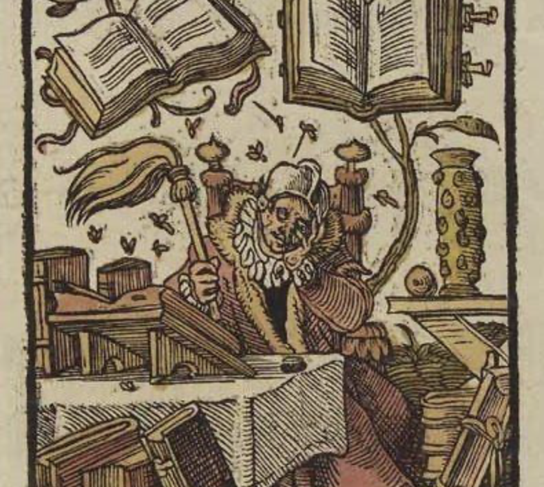
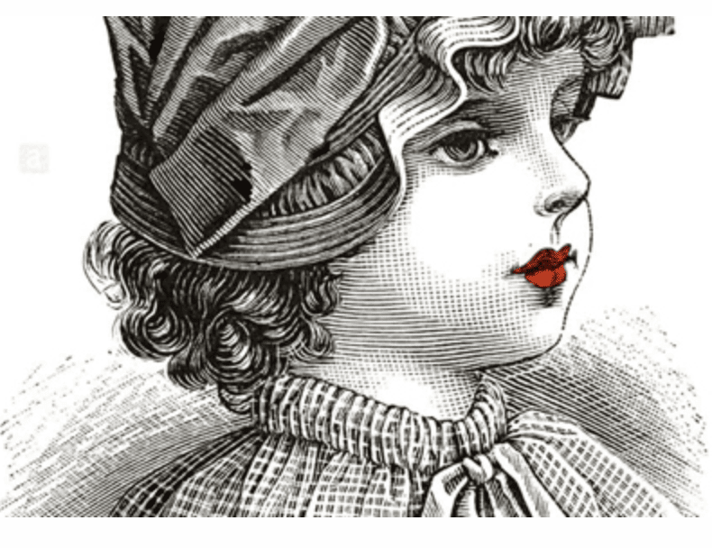
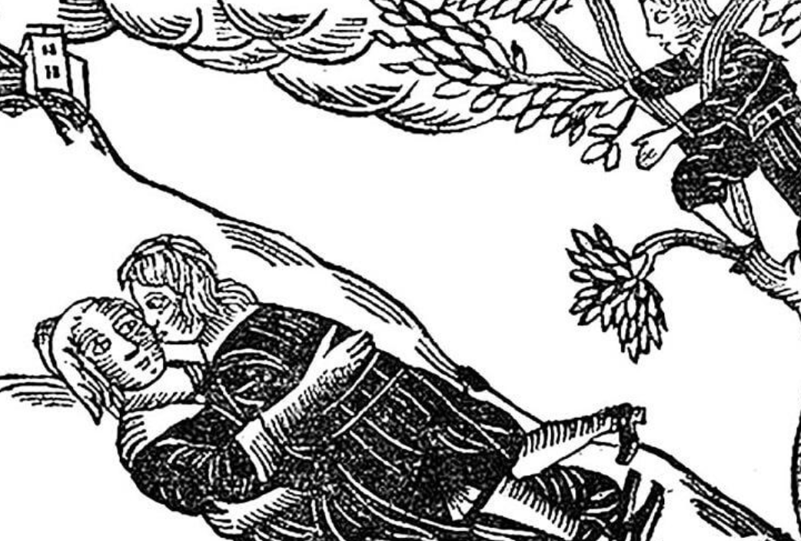

Διήγημα: “Το έλεγε η περδικούλα του” – Fractal
Στο αμάξι σου τα πόδια μου δεν φτάνουν στα πηδάλια και η πλάτη είναι πολύ όρθια. Προσαρμόζω το κάθισμα στο δικό μου ύψος, όπως και το καθρεφτάκι στο παρμπρίζ, στο οποίο έχεις κρεμάσει δύο κομποσκοίνια, έναν σταυρό κι ένα αρωματικό αυτοκινήτου με άρωμα βανίλια. Μάταια βέβαια, το αμάξι έχει μόνο τη μυρωδιά του σώματός σου. […] διαβάστε περισσότερα
Διήγημα: «Η αιώνια γραφή ενός πρώτου μυθιστορήματος» – Χάρτης

Αν είχα γράψει ένα μυθιστόρημα 50.000 λέξεων θα είχα ήδη ένα έτοιμο βιβλίο και θα ήμουν συγγραφέας. Θα έστελνα το βιβλίο μου σε εκδοτικούς και θα περίμενα το κρατικό βραβείο — ή έστω ένα οποιοδήποτε βραβείο. Αν είχα γράψει 5.000 λέξεις θα καταλάβαινα ότι μου ταιριάζει περισσότερο το διήγημα και θα εγκατέλειπα την ιδέα ενός μυθιστορήματος. Θα έσπαγα την ιστορία μου σε μικρότερες και θα ένιωθα ασφαλής που μπορώ να τα πω όλα σύντομα με αρχή μέση και τέλος. […] διαβάστε περισσότερα
Διήγημα: «Το σημάδι» – Χάρτης

Το κορίτσι είναι πέντε χρονών και κρυφοκοιτάζει τη μαμά που βάφεται καθισμένη στην τουαλέτα της. Είναι ωραία η μαμά. Πηγαίνει δίπλα της και την αγκαλιάζει από πίσω. Θέλει να της πει να μείνει μαζί της, να μην βγουν πάλι έξω με τον μπαμπά. Αλλά δε μιλάει. […] διαβάστε περισσότερα
Διήγημα: «Καμένες γωνιές» – Χάρτης

Η Κάτια παρατηρεί τις καμένες γωνιές από το τραπέζι. Τις αγγίζει με το δάχτυλό της και αναρωτιέται πώς δημιουργήθηκαν. Πρώτη φορά βλέπει το τραπέζι της κουζίνας χωρίς τραπεζομάντιλο. Η μαμά έστρωνε παλιά ένα λευκό με δαντελίτσα στην άκρη. Από τότε που εξαφανίστηκε ο μπαμπάς αντικαταστάθηκε με ένα μπλε σκούρο. Δεν αφήνει ποτέ κανέναν να το τινάξει μετά το φαγητό. […] διαβάστε περισσότερα
Διήγημα: «Στο φανάρι» – Φρέαρ
Στέκεται στο πεζοδρόμιο απέναντι. Τη σταμάτησε το κόκκινο για τους πεζούς κι έχω τον χρόνο να τη χαζέψω. Σήμερα φοράει ένα μαύρο κοντό φόρεμα με γκρι βούλες, μαύρο καλσόν, μαύρα μποτάκια, μαύρο δερμάτινο και από τον ώμο της κρέμεται μία κόκκινη τσάντα. Με παραξενεύει αυτή η μαυρίλα, την έχω συνηθίσει με χαρούμενα χρώματα. Τις προάλλες είχε τυλιγμένο στους ώμους της ένα φουλάρι στις αποχρώσεις που παίρνει ο ουρανός κατά τη δύση του ήλιου. Της φώτιζε το πρόσωπο και την έκανε ακόμα πιο όμορφη. […] διαβάστε περισσότερα
Ποίημα – «Κάθε φορά» – Fractal
Άνοιξε ξανά τα φτερά σου
και μη φοβάσαι.
Είμαι δίπλα σου.
Δε θα σε αφήσω. […] διαβάστε περισσότερα